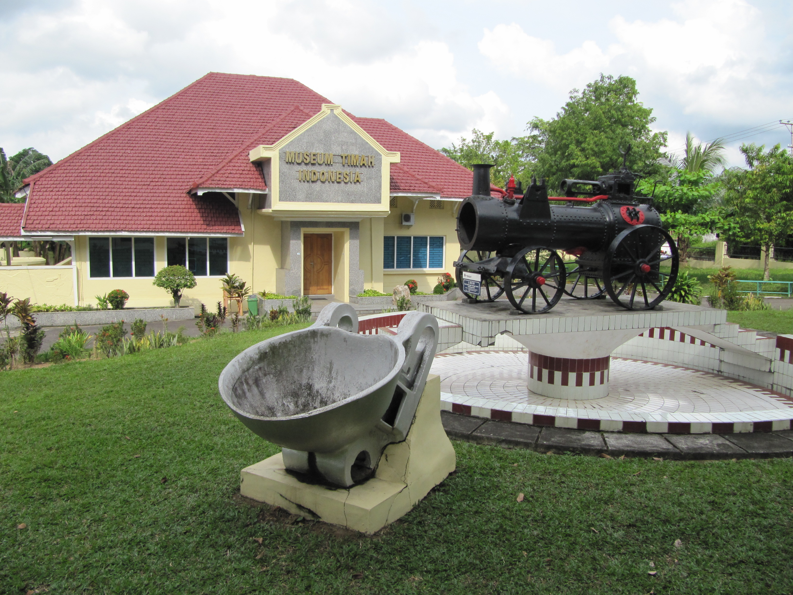
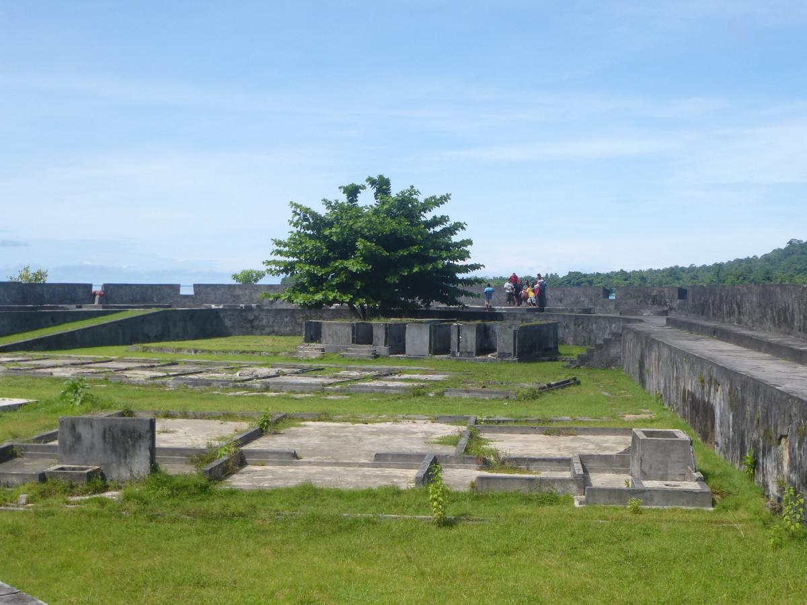
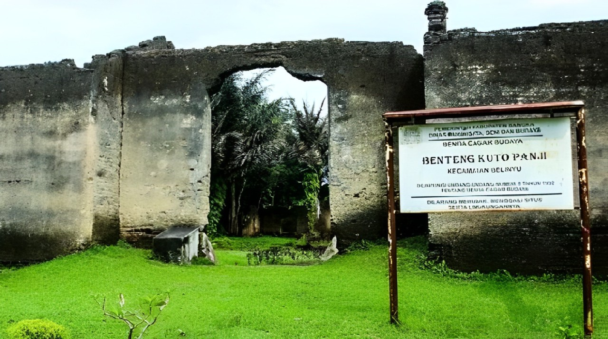
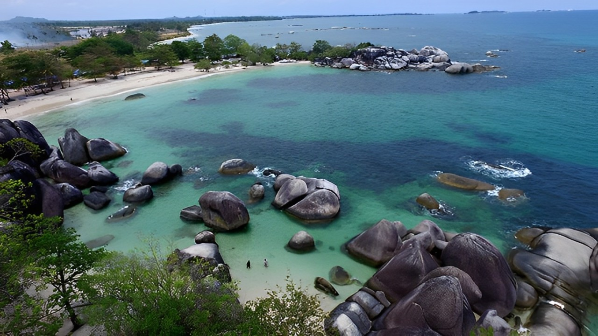
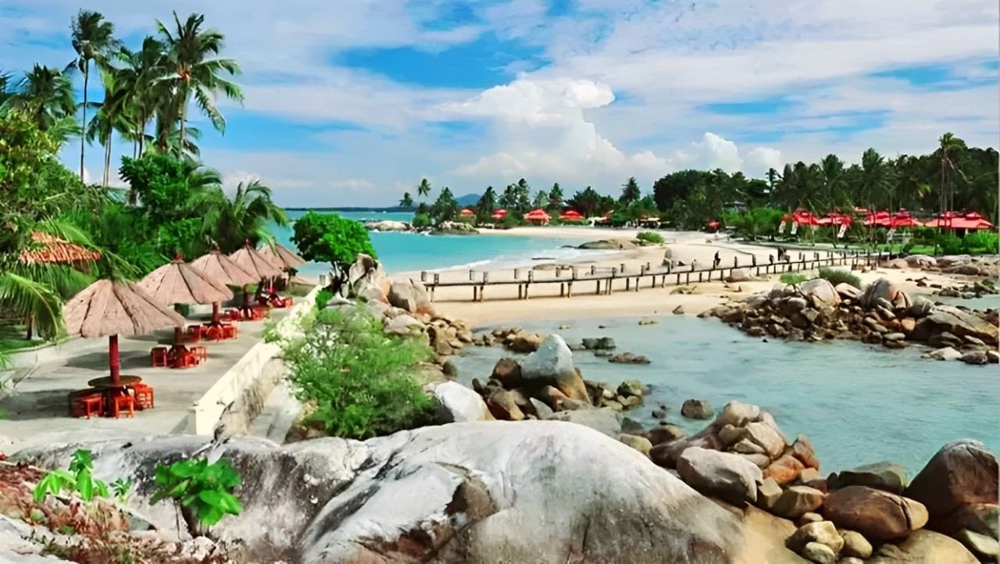
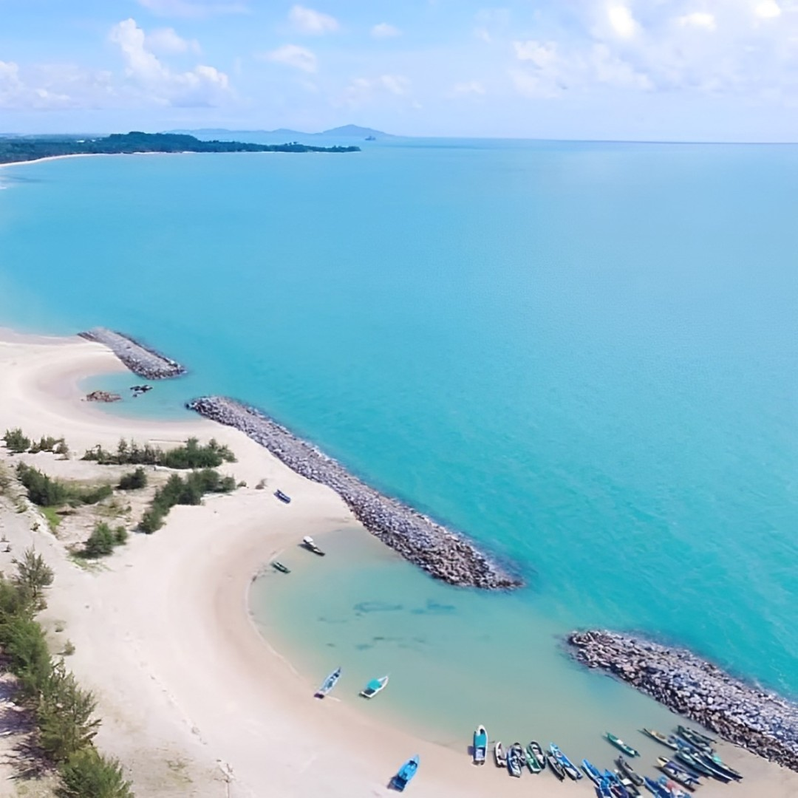
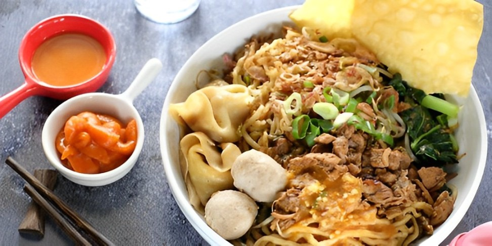
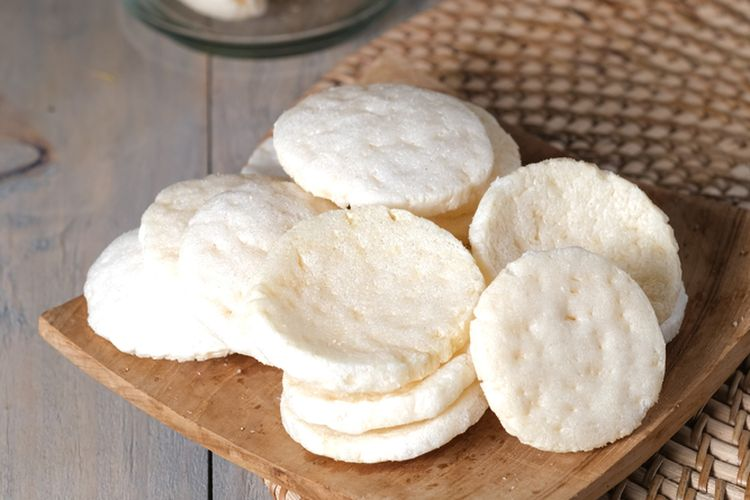
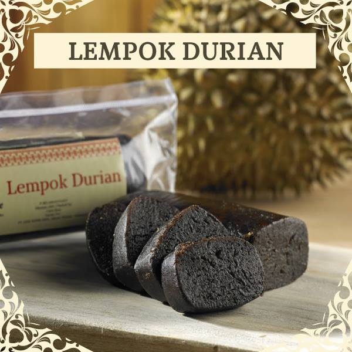

Tempat Bersejarah
Bangka Belitung, provinsi yang kaya akan sejarah dan kekayaan alam, menyimpan banyak tempat bersejarah. Hal tersebut menjadi daya tarik tersendiri bagi wisatawan yang memiliki rasa ingin tahu tentang masa lalu.
Museum Timah Indonesia (MTI)

Bangka Belitung telah menjadi salah satu pusat pertambangan timah terbesar di dunia sejak abad ke-17. Museum ini menyajikan warisan tersebut melalui berbagai koleksi artefak, dokumentasi, dan pameran yang menarik.Pengunjung dapat menjelajahi berbagai aspek sejarah pertambangan timah, mulai dari proses ekstraksi hingga pengaruhnya terhadap lingkungan di Bangka Belitung. Museum ini juga memiliki koleksi, seperti peralatan pertambangan kuno, foto historis, peta tambang, dan benda lain terkait industri timah. Selain itu, juga disajikan informasi tentang teknologi pertambangan modern. Museum Timah Indonesia ini terletak di Batin Tikal, Kecamatan Taman Sari, Pangkal Pinang.
Benteng Kota Tempilang

Benteng Kota Tempilang adalah sebuah bangunan bersejarah yang terletak di desa Tempilang, Kecamatan Tempilang, Kebupaten Bangka Barat. Benteng ini merupakan salah satu benteng yang dibangun oleh pemerintah kolonial Belanda pada abad ke-18. Benteng Kota Tempilang memiliki arsitektur yang khas dengan dinding-dinding yang kokoh dan menara pengawas yang menjulang tinggi. Dinding yang tebal dibangun dengan batu-batu besar yang dipadatkan dengan tanah dan batu kali, dan telah direnovasi beberapa kali untuk mempertahankan keutuhannya.
Benteng Kuto Panji

Benteng Kuto Panji yang terletak di Belinyu, Bangka, dibangun oleh pemerintah kolonial Belanda pada tahun 1825. Benteng ini memiliki struktur kokoh dengan dinding yang tebal serta empat bastion. Di dalam benteng ini terdapat kantor administrasi, gudang senjata, dan tempat tinggal para tentara Belanda.
Wisata
Bangka Belitung terkenal dengan destinasi wisatanya yang indah, menawarkan pesona alam dan warisan budaya yang kaya. Dengan keindahan alamnya yang mempersona dan kekayaan budayanya, Bangka Belitung menjadi destinasi yang menarik bagi para wisatawan yang ingin menjelajahi keindahan alam.
Pantai Tanjung Tinggi

Salah satu pantai yang terkenal karena keindahan alamnya. Pasir putih yang halus, baru granit besar di sepanjang pantai, dan air laut yang jernih dan biru menjadikan Pantai Tanjung Tinggi sebagai tempat yang menarik untuk dikunjungi. Pantai yang terletak di Desa Ciput, Kecamatan Sijuk, Kabupaten Belitung ini juga menjadi lokasi syuting untuk film Indonesia yang terkenal, "Laskar Pelangi".
Pantai Parai Tenggiri

Dengan pasir putih yang lembut, air laut yang jernih, dan langit bitu yang cerah, Pantai Parai Tenggiri menawarkan pengalaman liburan yang menyenangkan. Aktivitas snorkeling dan menyelam sanga diminati di pantai ini. Selain itu, di sepanjang pantai terdapat penginapan, restoran, dan area piknik. Pantai ini terletak di Desa Sinar Baru, Kecamatan Sungailiat, Kabupaten Bangka.
Pantai Matras

Di pantai ini, pengunjung dapat menikmati ketenangan sambil bersantai di tepi pantai dan menikmati pemandangan indah sekitarnya. Meskipun terletak di daerah yang lebih terpencil, tersedia beberapa fasilitas dasar, seperti tempat parkir dan area beristirahat. Pengunjung juga dapat membawa bekal makanan dan minuman untuk piknik di tepi pantai.
Makanan Daerah
Makanan dengan citarasa yang unik karena pengaruh dari berbagai budaya, seperti Tionghoa, Melayu, dan Jawa. Dibuat dari bahan-bahan lokal seperti ikan laut, rempah-rempah, dan kelapa.
Bakmi Bangka

Hidangan yang terbuat dari mie kuning yang tebal dan kenyal, serta disajikan dengan kuah kental yang gurih dan kaya rasa. Bakmi Bangka juga disajikan dengan berbagai tambahan, seperti pangsit goreng, pangsit rebus, bakso, tahu goreng, dan telur rebus. Selain itu, juga dapat ditambahkan bumbu tambahan, seperti kecap manis, saus sambal, bawang goreng, dan perasan jeruk nipis sesuai selera.
Kemplang

Makanan ringan yang terbuat dari ikan tenggiri yang diolah dengan dipotong, dihaluskan, dan dicampur dengan bumbu dan rempah-rempah, yang kemudian dikeringkan dan digoreng atau dipanggang hingga berwarna kecoklatan. Proses ini menghasilkan kemplang dengan tekstur yang kering dan renyah. Makanan ini sering dijasikan sebagai oleh-oleh khas Bangka Belitung. Biasanya kemplang juga dilengkapi dengan bumbu tambahan, seperti sambal terasi atau kuah kacang.
Lempok Durian

Kue tradisional yang terbuat dari campuran tepung ketan, santan, gula, dan durian yang dihaluskan, yang kemudian dibentuk dan dikukus hingga matang. Tektur kue ini sangat lembut dan kenyal, dengan rasa manis dari gula dan aroma khas dari durian. Durian yang digunakan sebagai bahan utama ini memberikan cita rasa yang khas dan aroma yang menggugah selera.